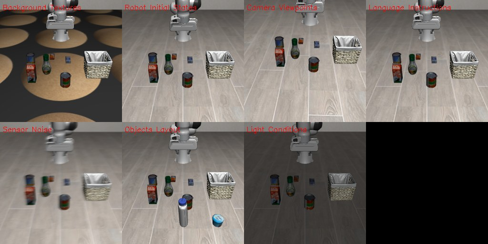
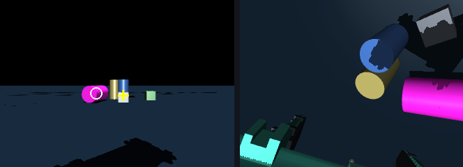

物理仿真的工作区，
不是一个仓库塞下所有东西
上游源码、我们自己的代码、几 GB 的数据和跨项目文档分开放：
第三方与大数据不进 git，由 scripts/fetch.py 按固定 commit / sha256 复原。
克隆下来只有几十个文件、不到 3 MB，跑一条命令就是完整环境。
01 · 三条线
一份工作区，三个互相喂饭的东西
机器人的视觉要能在仿真里被量化，仿真的管线要能在真基准上被检验。
microduck-vision（mvision）
把「几张 RGB-D 照片 → 三维重建 → 结构化感知」接进 MicroDuck 仿真，替换镜像里那个直接读仿真状态的几何替身检测器。
- 零训练：纯 numpy 几何 + 一行颜色阈值
- 零侵入：上游源码只 import，不改一行
- 零大依赖：不引 open3d，深度模型一律走 HTTP
LIBERO-plus 基准
VLA 鲁棒性基准：10,030 个任务，7 个扰动维度（物体布局 / 相机视角 / 机器人初始位姿 / 语言 / 光照 / 背景纹理 / 传感器噪声）。
- 4 个套件：spatial 2402 · object 2518 · goal 2591 · 10 2519
- 加上原 LIBERO-90，共 10,120 个任务
- 本机装好即跑（conda
liberoplus）
MicroDuck 机器人栈
Pollen Robotics 的双足机器鸭：MuJoCo 模型、CPU 训练栈、浏览器 viewer，外加 10 个预训练 ONNX 策略。
- 4 个上游 checkout，钉 commit SHA
- 策略权重钉 HF revision + 每文件 sha256
- 容器内 CPU 训练已验证
02 · 运行现场
真的跑出来的图，不是示意图
下面每一张都是本仓库脚本在 MuJoCo 里渲染出来的，对应命令写在图注里。

./scripts/run_liberoplus.sh python scripts/smoke_test_categories.py
success=True。
生成：./scripts/run_liberoplus.sh python scripts/demo_video.py
（--live 则开一个真 3D 窗口实时看）



03 · 结构
四类目录，四条规矩
克隆之后只有我们自己的东西；别人 6 GB 的资产、19 MB 的模型、4 个上游仓库，全靠 fetch.py 复原。
spin-physics-ai/
├── LICENSE Apache-2.0（末尾附第三方许可汇总）
├── README.md 工作区地图 / 约定 / 速查
├── AGENTS.md 给 AI 助手和协作者的硬规则（禁改目录、网络兜底）
├── scripts/ ＜入库＞
│ ├── fetch.py 第三方源码 / 权重 / 数据 / 镜像（钉 commit + sha256）
│ ├── run_liberoplus.sh 进 conda 环境跑任意命令（渲染变量已设好）
│ ├── smoke_test.py 单任务自检：建环境 → reset → step → 渲染
│ ├── smoke_test_categories.py 7 个扰动维度各渲一张
│ └── demo_video.py 脚本化 pick-and-place（录 MP4 / 开真窗口）
├── microduck-vision/ ＜入库＞ 我们自己的感知项目（mvision）
├── docs/ ＜入库＞ 设计文档、安装与踩坑记录
├── site/ ＜入库＞ 本页（单文件 HTML + 图，推 main 自动部署 Pages）
├── robots/ ＜不入库＞ 上游机器人源码，fetch.py 复原
├── benchmarks/LIBERO-plus/ ＜不入库＞ 上游基准仓库
└── data/ ＜不入库＞ 6.4 GB 资产与数据集| 目录 | 是什么 | 入库 | 规矩 |
|---|---|---|---|
benchmarks/ | 别人的基准仓库，要能跟上游 | 否 | 只做兼容性改动（运行时精确替换，幂等） |
robots/ | 别人的机器人源码，只读 + 被 import | 否 | 固定 commit 复原；要改就写在覆盖层 |
| 顶层项目目录 | 我们自己的代码 | 是 | 产物写 /data 或 data/ |
data/ | 数据集、压缩包、采集结果 | 否 | 写明重下命令，永不 git add |
为什么不用 git submodule：受限网络下 git clone 常年不通，submodule 会直接卡死整次 clone；
而且上游是 4 个仓库叠加 6.4 GB 数据，子模块反而更难控。
04 · 快速开始
克隆 → 复原 → 自检
git clone https://github.com/spin-ai/spin-physics-ai.git && cd spin-physics-ai
./scripts/fetch.py # 第三方源码 + 权重 + 基准 + 6.4 GB 资产 + 镜像
./scripts/fetch.py verify # 只校验（加 --deep 连 6.4 GB sha256 也重算）看一下 ROS-free 的那部分能不能跑（不需要 GPU、不需要容器）：
cd microduck-vision
pip install -e ".[dev]"
pytest # 9 passed, 3 skipped（需要 MOSS 资产的用例自动 skip）让基准里的机械臂动起来（macOS/Linux，MuJoCo 离屏渲染）：
./scripts/run_liberoplus.sh python scripts/smoke_test.py # 建环境 + 渲染一张
./scripts/run_liberoplus.sh python scripts/smoke_test_categories.py # 7 个扰动维度各一张
./scripts/run_liberoplus.sh python scripts/demo_video.py --live # 开真窗口看它抓放05 · 实测
用真实渲染的照片替换「几何替身」，误差有多大
20 个随机场景，4 个视角（3 个前视 + 1 个腕部），osmesa 真实渲染。 验收线是位置 median 10 mm / p95 25 mm；三个后端全部通过。
| 语义后端 | 位置 median / p95 | 主轴 median | 顶高 median | 检出率 | 端到端 median |
|---|---|---|---|---|---|
oracle（真值掩码，上限） | 2.1 / 5.6 mm | 3.0° | 1.7 mm | 100% | 1.07 s |
color（品红阈值，零训练零联网） | 0.5 / 5.6 mm | 3.4° | 1.0 mm | 100% | 1.01 s |
none（无语义，取最大簇） | 3.7 / 10.2 mm | 3.0° | 1.2 mm | 100% | 1.17 s |
color ≈ oracle 说明瓶颈在几何不在语义。把干扰物加到 4 个后，无语义的
none 崩到 p95 114.8 mm，color 仍稳在 0.4 / 5.4 mm——
这是「为什么需要语义层」的定量证据。
06 · 许可与引用
我们的代码 Apache-2.0，别人的东西不进这个仓库
| 组件 | 入库 | 许可 |
|---|---|---|
| 本仓库代码与文档 | 是 | Apache-2.0 |
| microduck-lab / microduck / microduck_rl / microduck-docker | 否 | Apache-2.0 |
| microduck-policies（10 个 ONNX） | 否 | Apache-2.0 |
| LIBERO-plus（上游 GitHub 仓库） | 否 | 上游未声明许可（只下载，不复制） |
| LIBERO-plus assets（HF dataset） | 否 | MIT |
@misc{spin-physics-ai,
title = {spin-physics-ai: 物理仿真 + 机器人学习工作区},
author = {spin-ai},
year = {2026},
howpublished = {\url{https://github.com/spin-ai/spin-physics-ai}}
}